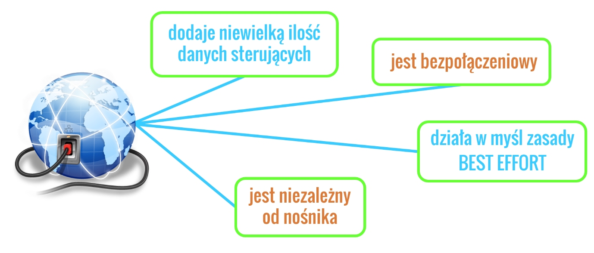
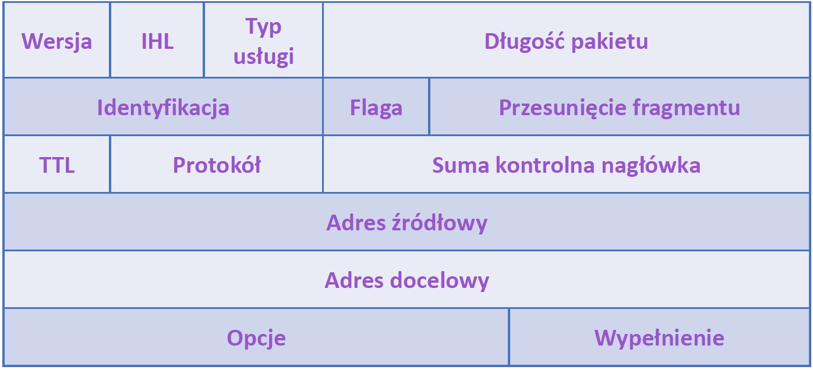

Adresowanie IPv4
Adresowanie IPv4
Protokół IPv4 został zaprojektowany w taki sposób, aby nie wymagał dużej ilości danych sterujących dodawanych w procesie enkapsulacji.
Zapewnia tylko podstawowe funkcje, niezbędne do przesyłania pakietów od źródła do celu. Jest bezpołączeniowy, co oznacza, że nie ustanawia połączenia przed wysłaniem danych,
działa w myśl zasady “najlepiej, jak to możliwe” (ang. best effort), co oznacza, że nie wykorzystuje kontroli przepływu ani żadnych potwierdzeń dostarczania danych tak jak
było to w protokole TCP, ale dokłada wszelkich starań, aby komunikacja przebiegała pomyślnie. Jest to również protokół niezależny od nośnika, to znaczy,
że dane pomiędzy hostami mogą przesyłane być bez względu na zastosowane medium transmisyjne.

W jednej sieci możemy mieć przecież kabel typu skrętka, w drugiej światłowód, a w trzeciej fale radiowe. Protokół IP, będzie działał dokładnie tak samo w każdej z tych sieci.
Problemem, jaki może się pojawić podczas przesyłania danych przez różne media jest maksymalna wielkość pakietu, czyli wartość MTU (ang. Maximum Transmission Unit), jeśli pakiet
jest zbyt duży, to podłączony do sieci ruter podzieli go na mniejsze części. Proces ten nazywamy fragmentacją – kolejne pojęcie do naszego sieciowego słownika.
Aby łatwiej było zrozumieć działanie protokołu IPv4 oraz to, w jaki sposób pakiety danych przesyłane są przez Internet zaprezentuje jego działanie na przykładzie wysłanej
paczki od cioci z Ameryki. Na paczkę składają się 3 kartony, połączone w jedną całość. Ciocia, zaadresowała prezent i dostarczyła go do firmy kurierskiej.
Przy nadaniu paczki zrezygnowała ze wszystkich opcji dodatkowych, takich jak potwierdzenie odbioru czy śledzenie paczki. Pracownik firmy przykleił na kartony naklejkę z adresem
docelowym oraz zwrotnym i przekazał paczkę dalej. Została ona, wraz z dziesiątką innych przesyłek, samochodem dowieziona do portu, gdzie zapakowano ją do kontenera i statkiem
wyruszyła w podróż za ocean.
W porcie docelowym kontener rozpakowano, posegregowano paczki, następnie samochodami rozwieziono do poszczególnych miast i tamtejszych punktów odbioru.
Z punktu odbioru, samochodem, paczka ma zostać dowieziona pod dany adres, ale okazuje się, że trzy połączone kartony są zbyt duże, aby przewieść je mały samochodem,
dlatego kurier dzieli ja na pojedyncze kartony i w taki sposób Ci je dostarcza. W związku z tym, iż ciocia nie wybrała opcji dodatkowych,
firma kurierska nie dostarczyła jej potwierdzenia odbiory.
Przekładając to na komunikacje z wykorzystaniem protokołu IP będzie tak
Pakiet został wysłany bez wcześniejszego poinformowania odbiorcy – mamy tryb bezpołączeniowy;
W procesie enkapsulacji został nadany adres źródłowy i docelowy – w naszym przykładzie to był adres zamieszkania odbiorcy jako adres docelowy, i adres zamieszkania cioci jako adres zwrotny;
Pakiet nie został zaopatrzony w dużą ilość danych sterujących mogących spowolnić komunikację – w tym celu ciocia zrezygnowała z opcji dodatkowych, czyli z potwierdzenia i śledzenia paczki;
Pakiet dotarł do celu poprzez media światłowodowe, skrętkę i fale radiowe – no bo paczka została dostarczona różnymi środkami transportu: statkiem, dużym samochodem, małym samochodem;
Pakiet był za duży aby przesłać go w całości, przez jedną z sieci dlatego został pofragmentowany – czyli paczka została w pewnym momencie podzielona, aby można był wykorzystać do transportu mały samochód;
Protokół IP nie wysłał potwierdzenia, że pakiet została odebrany – tak jak firma nie zapewniła cioci, że paczka dotarła na miejsce.
Jak każdy protokół komunikacyjny, również IPv4 ma ustandaryzowany nagłówek, pozwalający na dodawanie informacji sterujących. Przykład typowego nagłówka IPv4 widoczny jest poniżej.

Docelowy adres IP v– adres IP urządzenia, do którego kierowane są dane;
Źródłowy adres IP – adres IP urządzenia, który jest nadawcą danych ;
Czas życia (TTL) – 8 bitowe pole, które określa pozostały czas życia pakietu.
Wartość TTL jest zmniejszana o co najmniej 1 za każdym razem, gdy pakiet przechodzi przez ruter (tj. za każdym przeskokiem).
Kiedy wartość osiąga 0, ruter porzuca pakiet i jest on usunięty ze strumienia danych w sieci.
Mechanizm ten chroni pakiety, które nie mogą osiągnąć celu przed przekazywaniem w nieskończoność pomiędzy ruterami w tzw. pętli rutingu.
Jeżeli pętle rutingu byłyby dozwolone, sieć byłaby przeciążona pakietami danych, które nigdy nie osiągną swojego celu. Zmniejszanie wartości TTL przy każdym przeskoku zapewnia,
że w końcu osiągnie wartość 0 i pakiet, którego pole TTL równe jest 0 będzie odrzucony.
Protokół – ta 8-bitowa wartość, określająca wykorzystany protokół warstwy wyższej (transportowej), np. UDP lub TCP.
Typ usługi (ToS) – zawiera 8-bitową wartość, która używana jest do określenia priorytetu każdego pakietu.
Przesunięcie fragmentu – pole stosowane podczas rekonstrukcji podzielonego przez ruter pakietu. Wskazuje porządek, w jakim ma być ustawiony każdy z pakietów podczas rekonstrukcji.
Flaga MF (ang. More Fragments) – pojedynczy bit używanym z polem przesunięcia fragmentu do podziału i rekonstrukcji pakietów. Gdy bit flagi MF jest ustawiony, oznacza to, że dany fragment nie jest ostatnim fragmentem pakietu. Kiedy host odbierający zauważy przybywający pakiet z ustawioną wartością MF=1, sprawdza pole przesunięcia fragmentu, gdzie należy umieścić ten fragment podczas rekonstrukcji pakietu. Kiedy host odbierający zauważy przybywający pakiet z ustawioną wartością MF=0 i niezerową wartość w polu przesunięcia fragmentu, umieszcza ten fragment jako ostatni kawałek rekonstruowanego pakietu.
Flaga DF (ang. Don’t Fragment) – pojedynczy bit, który jeśli jest ustawiony wskazuje, że fragmentowanie pakietu jest niedozwolone. Jeżeli flaga DF jest ustawiona, wtedy fragmentacja tego pakietu nie jest dozwolona.
Wersja – zawiera numer wersji protokołu IP (w tym wypadku to będzie IPv4).
Długość nagłówka (IHL) – określa rozmiar nagłówka pakietu.
Długość pakietu – to pole podaje w bajtach całkowitą wielkość pakietu, zawierającą nagłówek oraz dane.
Identyfikacja – to pole jest używane do jednoznacznego identyfikowania fragmentów podzielonego pakietu IP.
Suma kontrolna nagłówka – pole używane jest do sprawdzenia błędów nagłówka pakietu.
Opcje – jest to miejsce na dodatkowe pola w nagłówku IPv4 do obsługi innych usług. Jest ono jednak rzadko używane.